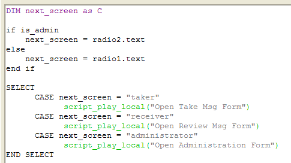
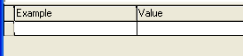

Watching Script Execution with the Debugger
In Exercise 10, you saw how Xbasic code in the object events determine what is shown on the form and what options are available to the user. When you signed in as an administrator in the Its For You application, the Radio2 control was enabled for you to select from three choices: See your messages, Take messages and Manage Users.
To proceed in the application, you press the Next button. The Next button's OnPush event is shown at the right in figure 55.

Figure 55
The script checks the value of the is_admin variable (which was set in the event script of the Please Login button). The next_screen variable is set to the value of the choice made in either the Radio2 or Radio1 control. If is_admin is True, the Radio2 control is the active control (see Exercise 10) and next_screen is set accordingly.
|
if is_admin next_screen = radio2.text else next_screen = radio1.text end if |
The SELECT command includes a number of CASE statements. If the expression for a case command evaluates to TRUE, the command(s) that follow are run, otherwise the next CASE statement is evaluated. So if the variable next_screen is set to receiver in the IF statement above, the SELECT command processes this command:
|
script_play_local(Open Review Msg Form) |
|
A debugger is tool that helps you to catch errors and validate that commands are doing what you intended when you write a program. Because they help you eliminate bugs from your program, these kind of tools are called debuggers. The Debugger is a separate window that you can open from the Alpha Five View menu or dynamically at any point in a script by using the Xbasic debug() command. |
n Exercise 10, you looked at the script for the OnPush event of Button1 and now you have reviewed the script for the OnPush event of Button2 for the Sign In form by viewing the commands in the Code Editor. When you are creating scripts like these, Alpha Five provides a mechanism to see each line of Xbasic code as it is processed and to examine the values that variables take on as the code runs. This feature is the Xbasic debugger and in the following exercise, you will turn on the debugger with an Xbasic command in the Button2 script and then watch interactively as Alpha Five processes the rest of the scripts Xbasic commands.
Exercise 11 - Watching a script execute through the Xbasic debugger
Open the Sign In form in Design mode.
Right-Click on the Next button.
Select Events and then OnPush. The :Sign_In:BUTTON2.OnPush event code will load in the Code Editor.
Enter the following as the first line of the script:
Enter the following as the last line of the script:
Save the script and close the Code Editor.
Run the Its For You application by viewing the Sign In form. Login in as user "Ricky Manes" with password "password".
When you have reached the What do you want to do? form display, leave the radio control selection on See your messages and click the Next button.
In the first row of the Example column of the Watches section, type:
Type:
Press the Trace into line of Xbasic button once. Alpha Five just executed the line, DIM next_screen as C and has now paused at the next Xbasic command. (Note the full Xbasic command that begins on this line with the IF statement and extends for five lines until the END IF statement). DIMming a variable does not affect a variables value so nothing has changed in the Watches section.
Press the Trace into line of Xbasic button once. This command begins with IF is_admin THEN so if the value of is_admin is True, then the following line of Xbasic code will be executed. In fact, you can see in the Watches section that is_admin is True, so the Debugger has moved to the next line of code (though it has not executed it yet).
Press the Trace into line of Xbasic button once. This line of code sets the variable next_screen to a value of whatever is stored in radio2.text. Radio2 is a control on the Sign_In form. In Step 8, you left the Radio2 control set to "See Your Messages" and the text (value) of that control is therefore "receiver". (You can verify this by examining the choices list for the Radio2 control on the Sign_In form.) If you look down at the Watches section, the value of next_screen is now displayed by the debugger and indeed it is set to receiver.
Press the Trace into line of Xbasic button once. The pointer symbol moves to the SELECT command.
Press the Trace into line of Xbasic button once. The pointer symbol moves to the CASE statement. This checks to see if next_screen is set to a value of taker. (Its not, since you can see the value in the Watches windows, so what do you think will happen when you trace into this line of Xbasic?)
Press the Trace into line of Xbasic button once. You are right! Alpha Five skips the command after the CASE statement, because it did not evaluate to True. The Debugger pointer symbol is positioned at the next CASE statement.
Press the Trace into line of Xbasic button once. This CASE statement does evaluate to True and Alpha Five is ready to process the command following this CASE statement. However, this command will play a whole different script than the one you are viewing in the Debugger. If you Trace into line of Xbasic here, the debugger will load the Open Review Msg Form script into the Debugger and you will have the option of tracing through that script. You will next ask Alpha Five to, indeed, run this command and execute the Open Review Msg Form script, but not to load that script into the Debugger.
Press the Step over line of Xbasic button once. The Open Review Msg Form script executes and the Review Messages form loads. You are still in the OnPush event script for Button2 and the Debugger is ready to execute the next command.
Press the Trace into line of Xbasic button once. This CASE statement evaluates to False so the next line is skipped.
Press the Trace into line of Xbasic button once. The SELECT command has finished.
Press the Trace into line of Xbasic button once. The command debug(0) closes the debugger. You watched the whole script execute line by line in the debugger so you dont need it anymore and this command closes the debugger window and returns you to your application.
Close the application (not Alpha Five). Use the Exit buttons on the application's forms.
Go to Design mode for the Sign In form.
Edit the button2.OnPush event script and remove or comment out the two debug lines you added at the beginning of this lesson.
Close all windows.
|
debug(1) |
This command will turn on the debugger when this script executes.
|
debug(0) |
This command will turn off the Debugger when the script ends.
|
The Debugger has a menu and two main sections: code view and watches The code view shows the Xbasic code of the script that is currently loaded in the debugger. This is the script that Alpha Five is currently processing. The pointer symbol shows which line of the script will execute next.
The watches section allows you to type in variable names (or expressions) in the Examples column. As the script executes, the Debugger will show how the values of the variables you are watching change in the Value column. As you watch a script execute in a debugger, there are three main
commands that you can use to watch line-by-line which command gets executed.
These three commands are accessible through the Debug
menu or the toolbar. On the toolbar these are the three buttons that
control the progression through the scripts Xbasic commands: The button in the middle is the Trace into line of Xbasic button and is the one you will use most often. The button on the left is the Step over line of Xbasic. The button on the right is the Skip over current line. Pressing Trace into line of Xbasic directs Alpha Five to process the line the pointed to by the pointer symbol. When you press Step over line of Xbasic, Alpha Five will process the line pointed to by the pointer symbol but if that line invokes another script, that scripts Xbasic commands will not be shown in the Debugger. (This means if the Xbasic command were play_script_local(Script 2), then Script 2 would execute but you would not see all of Script 2's lines of code as you would if you has used the Trace into line of Xbasic command.) Finally, if you press Skip over current line, then the line pointed to by the pointer is not executed and the next Xbasic command is processed. (This means if the Xbasic command were play_script_local(Script 2), then Script 2 does not execute and the next line after this one is the next one processed by Alpha Five.) |
When you press the Next button, Alpha Five runs the OnPush event script. At the start of this exercise, you entered the command debug(1) as the first line of this script and this command causes the debugger window to open. The pointer symbol is showing the next command that will execute is DIM next_screen as C.
When you are in the Debugger, you have to tell Alpha Five how to proceed. You have a number of options. You can direct Alpha Five to execute the line it is pointing to and then pause again. You can highlight a line further down in the script and tell Alpha Five to execute all the commands from the current pointer until the line you highlighted and then pause again. Or you can skip over lines or turn off the debugger and proceed normally. You can also, at any time Alpha Five has paused and is waiting for your direction, type variables names in the Watches section to see what values they take on as the script executes.

Figure 56
|
This is the Code View section of the debugger where you see each line of the script Alpha Five is currently executing. |

|
This is the Watches section of the debugger where you can type in variable names or expressions and watch as their values change as the script runs. |
|
next_screen |
and press Tab twice. The cursor will move to the second row of the Watches section.
|
is_admin |
and press Tab twice again. The cursor will move to the third row of the Watches section. The Value column for the next_screen variable row shows ???. (This variable has no value assigned to it yet.) The Value column next to the is_admin variable shows .T. or True. This variable is a global variable and is assigned a value of True by the :Sign_In:button1.OnPush event when you log in as user Ricky Manes who is an administrator.
The pointer symbol has advanced to the next line of the script. Alpha Five is still processing the IF...THEN...ELSE...END IF command. But since the test value of the IF statement already evaluated to True then Alpha Five should skip the commands after the ELSE statement. So if you press Trace into line of Xbasic the pointer symbol should move past the commands following else (since they will not be executed) and to the next Xbasic command.
|
Only press the Trace into line of Xbasic ONCE in each of these exercise steps. At step 17, be especially sure to press this button ONCE or else another script will load into the Debugger. (If you would like to see this happen, you can load the next script and process its commands.) If you mistakenly start another script in the debugger, press the F5 (Go) key to execute all the commands in the script and you will return to the calling script in the Debugger. |
|
One other button on the Debugger
toolbar that you should know about is the Go
button: This button (or the F5 key) can be used at anytime while you are using a script to process all the remaining commands in that script without pausing on each line. (If the current script invokes a second script, the debugger will pause at the first line of the second script.) Of course, you can then press Go again to process all of the second scripts commands without pausing. |
Next